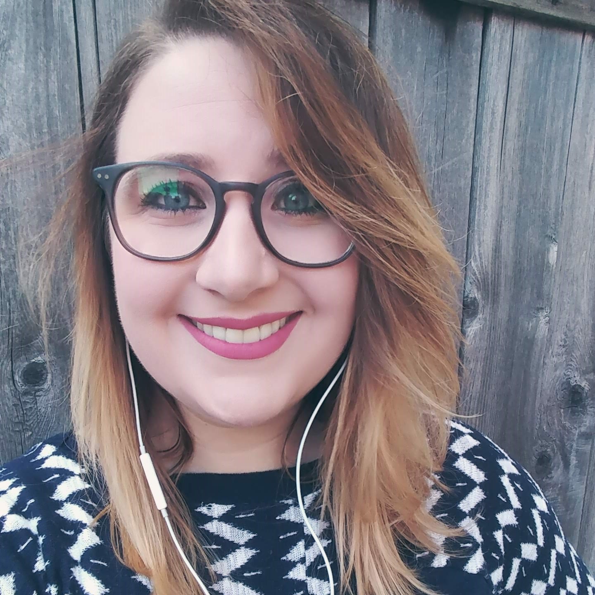

Hello and thanks for visiting my first Portfolio! I recently started taking a
Full-Stack Web Development Bootcamp and am hoping to use these skills to
change careers. Currently I work as a Sales Representative at a Tutoring
company. I speak with students, parents, and even teachers to assess what the
student needs, and I help them get support so they can be successful. It took
two years of working with students to realize that I wanted to go back to
school for something I am passionate about.
I've been in Seattle since fall 2014. I moved here after graduating from the
University of Oregon with a Bachelor of Science in Biology. Instead of moving
home to Santa Cruz, California, I decided to spend the summer working in Wyoming
at Yellowstone National Park. I thought it would lead to some clarity about my
career path, but I was only more conflicted. Grad school was a huge commitment
of both time and money, and I didn't want to rely on my parents for support
or go into more debt.
I decided to take my chances in Seattle (a city I'd only visited once) and see
if I could make it on my own. Knowing only one person there, and keeping just
enough cash reserved to pay for gas back to California, I started looking for
any job I could find. I worked in restaurants (back and front of house), retail,
customer service, and finally sales. I was overjoyed to be making a living wage
and completely independent but predictably each job turned to a grind and I
looked to slightly improve my work-life balance.
In the summer of 2018, I went to a friend's BBQ. He was the first new friend
I made in Seattle and we'd leap-frogged from job to job in tandem, recommending
that the other be hired. He told me that he had enrolled in a 6 month Coding
Bootcamp and his enthusiasm was inspiring. We talked about it more in detail,
and I decided that I could handle 6 months of anything. Put my head down,
absorb everything I can and really learn a new skill-set. With the full support
of my husband Greg, family and friends, I bit the bullet and enrolled in the
UW/Trilogy Full-Stack course in January 2019, with a class start date in March.
I am so beyond excited to improve my web development skills and make
a career changes. I've always been interested in technology and design as my
dad is an Electronic Engineer in Silicon Valley, and my mom is a Graphic
Designer. While I initially shucked my parent's advice and encouragement, I
finally came to my own realization that web develoment is an area I could
really excel at. I am detail orientated, exteremely driven, passionate about
both design and function, and not one to give up when things are challenging.
This course is literally the first step to actively change my life and I
couldn't be more eager.